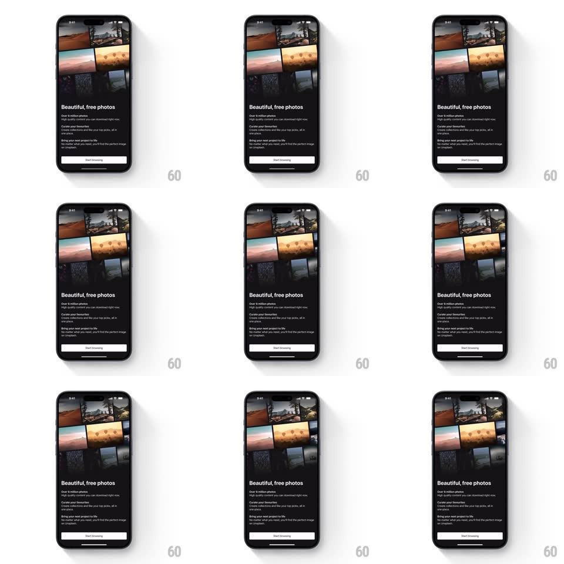

Media
Frame-by-frame

Rebuild this interaction 1:1: Unsplash's intro - an ambient multi-column photo grid auto-scrolls behind the "Beautiful, free photos" onboarding copy, columns drifting in alternating directions forever.

Rebuild this interaction 1:1: Unsplash's intro - an ambient multi-column photo grid auto-scrolls behind the "Beautiful, free photos" onboarding copy, columns drifting in alternating directions forever. ## Integration Integration: stack-agnostic spec - springs given as stiffness/damping, timed motions as duration + curve; map every value to your framework and animation library of choice. ## Scene A black onboarding screen: the top two-thirds hold a 3-column masonry photo grid (mixed photo tiles, tight gutters), the bottom third carries white copy - "Beautiful, free photos" headline, feature lines (Over 6 million photos..., Curate your favourites..., Bring your next project to life...), and a white "Start browsing" button. ## Motion spec Pattern: infinite ambient column scroll. - Each column scrolls vertically at a slow constant speed (~20pt/s), seamless-wrapped: odd columns drift up, even columns drift down. - Columns are phase-offset so tiles never align into rows while moving. - The grid fades to black at its top and bottom edges (gradient masks) and the whole grid sits at ~85% opacity so the copy layer owns contrast. - The copy block fades/rises in once on load (400ms); the button slides up with it (spring ~340/22). - No interaction with the grid - the button is the only tappable element. ## Calibration - Drift must be slow enough that no single photo is readable for less than ~3s - it's texture, not a gallery. - Seamless wrap: duplicate tiles so no gap ever shows. ## Reduced motion Static grid at 85% opacity; no drift. ## Don't miss - Alternating column directions - same-direction drift reads as a page scroll, not ambience. - The edge fades keep tiles from hard-clipping at the copy boundary.